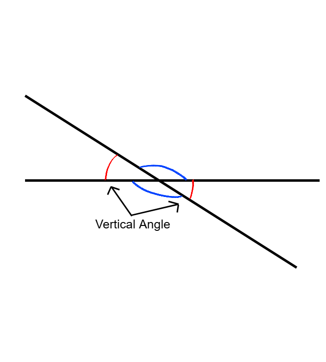
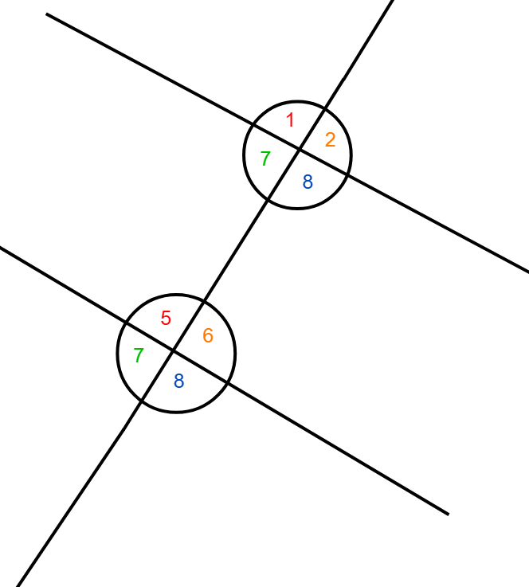
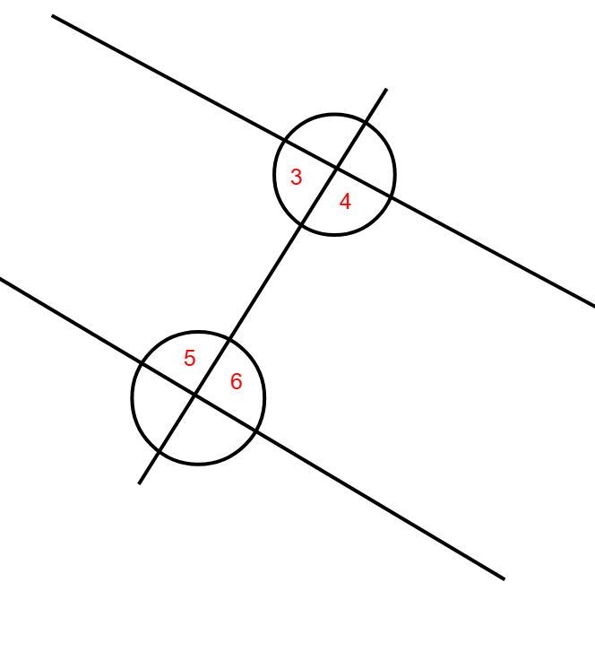
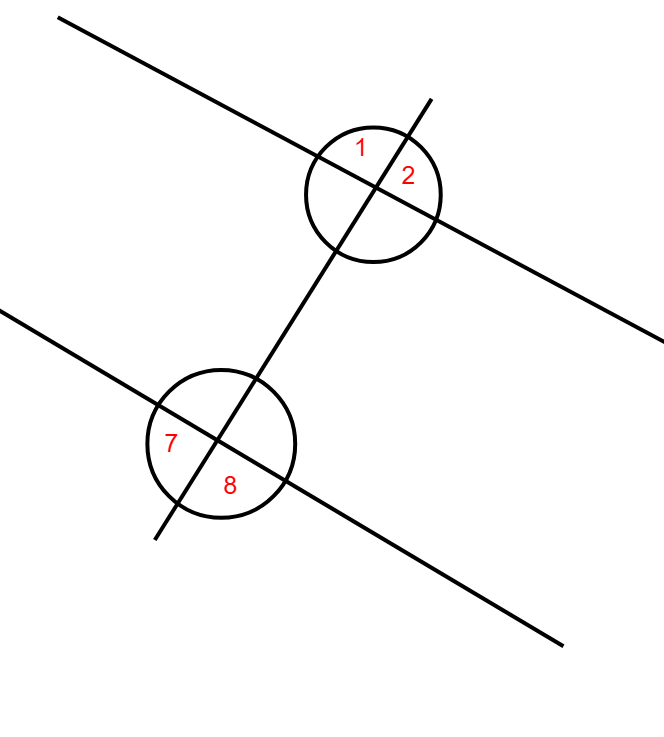
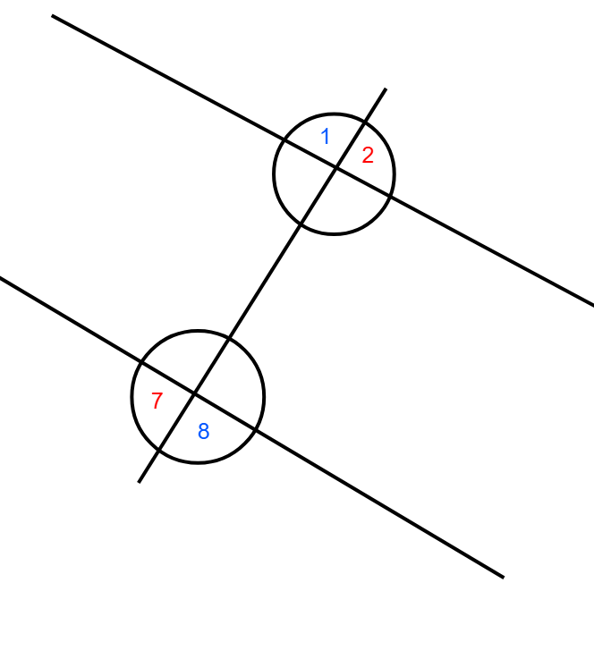

Different Types of Angles & Angle Relationships
Introduction
Angles are figures that are formed when two lines intersect…
All polygons have angles and either have uneven or even angles. For example squares and rectangles have four angles that are all 90 degrees that add up to 360 degrees (keep in mind that all shapes have angles that all add up to 360 degrees)…
All triangles have angles that add up to 180 degrees (360 if you add up the exterior angles)...
Angles are also classified by two different types of angles based on how many degrees they have.
Complementary Angles
Complementary Angles are two angles that add up to 90°. The best example of a complementary angle is a right angle like on a square…
You can see that these two angles add up to 90°. Complementary angles are found on squares, rectangles, rhombuses, and right triangles. You can also calculate one angle that is unknown based on the other angle. For example, take a look at this complementary angle...
At a glance, you can’t really tell what the second angle is. But to find an unknown angle that is a complementary one, you would have to subtract the angle that is known from 90°. So in this example, we would have to subtract 25° from 90° which equals 65°...
Now take a look at this example…
Remember that this complementary angle is the same as the last one. Just subtract the known angle from 90. So in this example, 90° - 75° = 15°…
Complementary angles are just one type of angle out of four. So let's move onto the next one.
Supplementary Angles
Supplementary angles are described as two angles that add up to 180° (equal to all three angles of a triangle added up together)...
These two angles add up to 180°, notice how these angles are separate to each other and not just one line. Same as complementary angles, an unknown angle can be found when an angle is known…
Since a supplementary angle is 180°. We can subtract 180° - 90° = 90°. So the missing angle is 90°...
Since the known angle is 45°, we can subtract 45° from 180°. 180° - 45° = 135°. So the missing angle is 135°.
Vertical Angles
Vertical angles are pairs of angles that are created through intersecting lines...

Vertical angles are two angles that are created through two different lines intersecting each other. Vertical angles don’t always add up to 90° and 180° unless they are both right angles.
Straight Angles
Straight angles is a single line that goes straight.
Unlike Supplementary angles, straight angles are only one angle while supplementary angles have two angles.
Parallel Lines
When two parallel lines are intersecting a transversal.
The line that intersects through the two lines is called the transversal. When this happens, new angle relationships are made.
Corresponding Angles
Corresponding angles are angles that are identical to each other but are separate because they are on a different line. For example in this example, ∠1 and ∠5 are both corresponding angles.
More examples of corresponding angles are ∠2 & ∠6, ∠3 & ∠7, and ∠4 & ∠8...

Corresponding angles are always identical to each other but they aren’t on the same line, like ∠5 and ∠8 are not corresponding angles.
Interior and Exterior Angles
Interior angles are angles that are within the two lines like these angles…

Exterior angles are angles that are outside the space between the two lines like these angles…

Alternate interior angles are interior angles that alternate from each other like these examples…
The alternate interior angle theorem states that if two lines are intersecting with a transversal, then the alternate interior angles are congruent (equal in measure) with each other.
Alternate exterior angles are exterior angles that are alternate to each other…
